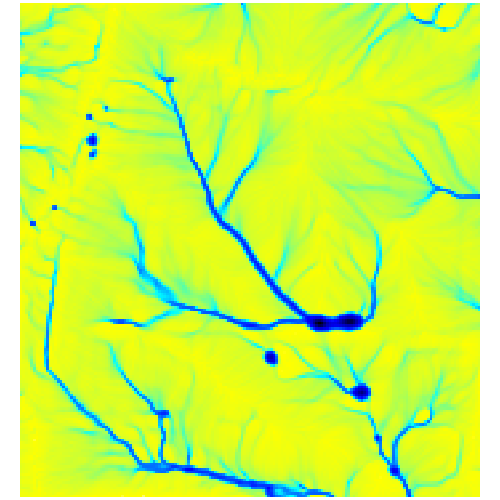
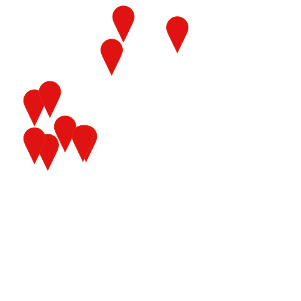
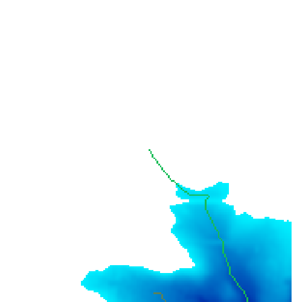
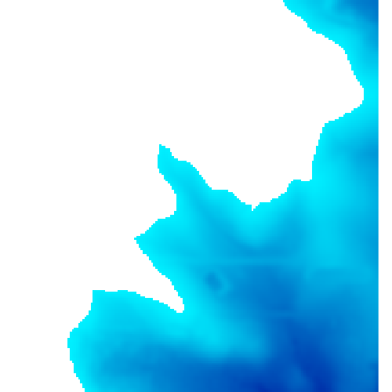
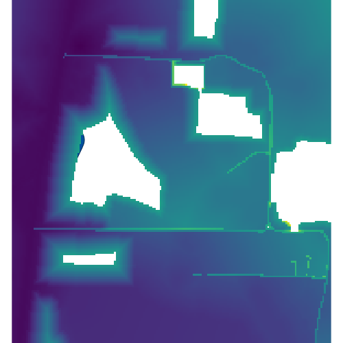
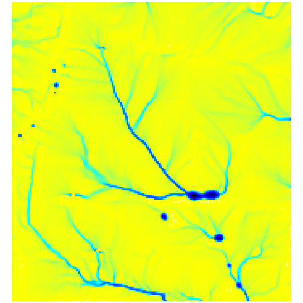

Created by Pratikshya Regmi.
Change topography and observe changes in surface water flow.

Created by M.Sh3hzaib.
Place markers on the landscape and see if they can be used to simulate fire spotting behavior.

Created by Titilayo Tajudeen.
Change in water level and observed change in overland flow using stream raster as the seed point.

Created by Christian Fleming.
Modify the terrain to protect the area from flooding.

Created by Gwen Kirschke.
Place markers on the landscape and program will calculate and display a metric for how well a pollinator could access them from a random starting point.

Created by Qasim Adegbite.
Observe changes in vulnerability with changing topography.
